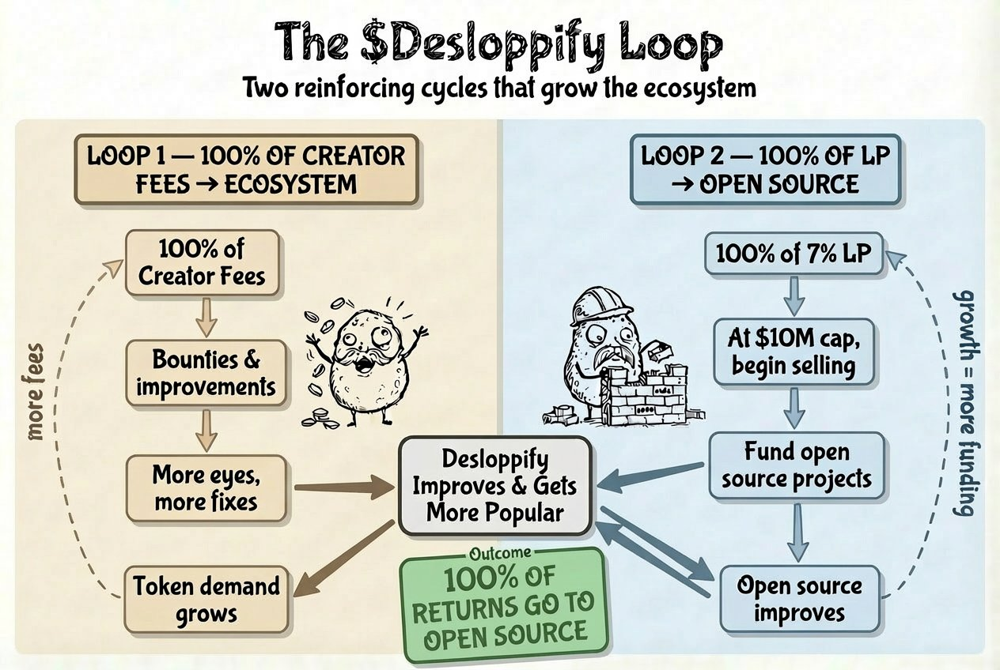

An experiment in funding open source with crypto
Some random crypto community folks created a Solana token for Desloppify. We didn't launch it, didn't ask for it, and don't control it. But they gave us ~7% of the supply plus the creator fees — roughly $7k at the time. So we're going to put it to good use.
The goal: build a flywheel where funds improve and market Desloppify, which grows the community, which grows the token, which creates more funds. 100% of everything goes back into the open source ecosystem. This isn't a profit play. It's an experiment.
Our goal is to build two reinforcing loops that both improve Desloppify and fund the open source ecosystem.

100% of token creator fees go toward bounties, challenges, and improvements that make Desloppify better. Better tool = more users = more attention = token demand grows = more fees. Repeat.
If the token hits $10M market cap, we begin selling off the 7% allocation. Every cent funds open source projects — AI credits, compute, infrastructure. All accounted for with invoices. Growth feeds funding feeds more growth.
Aside from using some resources to run these programs, I will not profit from this in any way. This is an experiment. It might not work. But if it does and we can fund something good from crypto — that'd be pretty cool, right?
We challenged people to find something genuinely poorly engineered in Desloppify's ~91k line, almost entirely AI-built codebase. We got 262 submissions and almost 50 that both Claude and GPT agreed were poorly engineered. We used these to improve both our process and our codebase.
Winner: @agustif
Found a circular dependency where base/ imported upward into
intelligence/, violating the project's own architecture contract.
$1,000 paid in SOL
The next challenge will change the format — less time-based, more focused on who gets the objectively best response. Follow along on Discord or @peterom on X.
6mjs2797K62H8vXWUkYikdkNiP3zsfmybC9Zq6z4pump